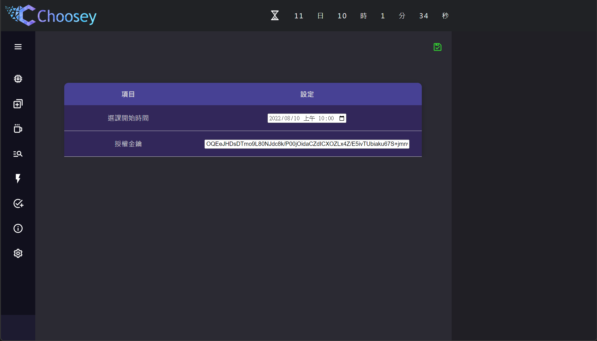

感謝您選用
這不是客套話
你本來可以載Chrome
開Edge懷舊
支持Firefox保護隱私
甚至用IE上網...
...如果你知道IE是什麼的話
你本來可以載Chrome
開Edge懷舊
支持Firefox保護隱私
甚至用IE上網...
...如果你知道IE是什麼的話
但你選擇了
我們超感謝的
歡迎加入社群與我們分享您的想法
官方Discord:
https://discord.gg/29AbBJ48Hk
Email:
chooseydev@gmail.com
起源
起源於某次一堂專業選修都沒搶到的選課初選，
然而再早起一天搶線上加簽後，
才告知系上都沒加簽...
於是一個大膽的想法就此誕生...

登入
登入時請使用大同學生校園資訊系統之帳號密碼。
本系統不負責驗證登入是否成功，但進入主畫面後可以查看登入狀態。
為維護您的密碼安全，本系統不會儲存您的密碼，請自行輸入。
本系統不負責驗證登入是否成功，但進入主畫面後可以查看登入狀態。
為維護您的密碼安全，本系統不會儲存您的密碼，請自行輸入。
主介面
登入後會自動跳轉到主介面。
分為左方的功能列、中間的主視窗、右方的輔助視窗，
左方的功能列可以按最上方的三橫線按鈕收合或開啟。
分為左方的功能列、中間的主視窗、右方的輔助視窗，
左方的功能列可以按最上方的三橫線按鈕收合或開啟。
控制中心
控制中心會顯示所有重要的資訊
[時間及授權區塊]
[時間及授權區塊]
NTP時間: 使用Google、FaceBook等公司的校時服務，取得的時間。
時間誤差: 本機時間-NTP時間，取得的差值。
運算延遲: 從取得時間到計算完成後顯示，所花費的時間。
授權金鑰:
顯示目前金鑰的驗證狀態，如果您已取得金鑰，請至設定頁面輸入。
[流程顯示區塊]
預載模組:
有別於前代產品，本系統會在選課時間前一分鐘，將快速選課資料從磁碟讀入記憶體，並在分割成每5堂1組後，設定快速選課的倒數計時器。
[網路狀態區塊]
與Google、TTU系統連線，並記錄各階段的時間，主機右方的數字為送達大約所需的毫秒數，供快速選課數值設定參考。
[系統狀態區塊]
顯示目前系統運行狀態，可使用下方按鈕啟動或終止。
各班課程
上方按鈕可以選擇各系所及班級課程。
右上按鈕可以在列表模式與課表模式間切換。
若可以加退選，課程左方會有加號與叉號按鈕，
可使用課程左方購物車按鈕，將課程加入或移出購物車。
右方輔助視窗可以瀏覽目前購物車內容。
右上按鈕可以在列表模式與課表模式間切換。
若可以加退選，課程左方會有加號與叉號按鈕，
可使用課程左方購物車按鈕，將課程加入或移出購物車。
右方輔助視窗可以瀏覽目前購物車內容。
通識課程
右上按鈕可以在列表模式與課表模式間切換。
若可以加退選，課程左方會有加號與叉號按鈕，
可使用課程左方購物車按鈕，將課程加入或移出購物車。
右方輔助視窗可以瀏覽目前購物車內容。
若可以加退選，課程左方會有加號與叉號按鈕，
可使用課程左方購物車按鈕，將課程加入或移出購物車。
右方輔助視窗可以瀏覽目前購物車內容。
觀測選課
右上按鈕由上而下分別為:
鎖定按鈕可以將課程鎖定，當觀測選課執行時，被鎖定的課一旦加選成功，就不會被列入可退選清單。
可使用課程左方移出按鈕，將課程移出清單。
拖動清單內的課程可以修改順序
右方輔助視窗可以按綠色匯入按鈕，將課程匯入清單。
在列表模式與課表模式間切換。
更新課程狀態。
存檔。
啟用/停用觀測選課。
若可以加退選，課程左方會有加號與叉號按鈕，鎖定按鈕可以將課程鎖定，當觀測選課執行時，被鎖定的課一旦加選成功，就不會被列入可退選清單。
可使用課程左方移出按鈕，將課程移出清單。
拖動清單內的課程可以修改順序
右方輔助視窗可以按綠色匯入按鈕，將課程匯入清單。
觀測選課有多種可能性:
在學分未滿的情況下，會直接加選密碼學。 在學分已滿的情況下，會退選WDB3D，然後再加選密碼學。 在學分已滿的情況下，會退選音樂劇與財務報表，然後再加選密碼學。 在學分已滿的情況下，會退選音樂劇與財務報表，留下應用電子，然後再加選密碼學。
在學分未滿的情況下，會直接加選密碼學。 在學分已滿的情況下，會退選WDB3D，然後再加選密碼學。 在學分已滿的情況下，會退選音樂劇與財務報表，然後再加選密碼學。 在學分已滿的情況下，會退選音樂劇與財務報表，留下應用電子，然後再加選密碼學。
快速選課
右上按鈕為存檔按鈕。
分為四個快速選課區域與一個重複送出區域，
可以單獨設定是否啟用一個區域，
右方輔助視窗可以按藍色滴管複製課程，再按清單左方插入按鈕匯入區塊。
快速選課區域只會在指定的時間送出一次，每個區域上限20堂。
重複送出區域會依照指定的間隔時間，不停送出直到伺服器回應，上限5堂，最多送出50次。
快速選課區域建議:
重複送出區域建議:
分為四個快速選課區域與一個重複送出區域，
可以單獨設定是否啟用一個區域，
右方輔助視窗可以按藍色滴管複製課程，再按清單左方插入按鈕匯入區塊。
快速選課區域只會在指定的時間送出一次，每個區域上限20堂。
重複送出區域會依照指定的間隔時間，不停送出直到伺服器回應，上限5堂，最多送出50次。
快速選課區域建議:
1區 套用NTP與網路延遲
2區 套用網路延遲
3區 不套用延遲
4區 往後延0.5~2.5秒
重複送出區域建議:
放重要的課程，間隔選擇0.5~1秒，勿設定為0
中選課程
右上按鈕可以在列表模式與課表模式間切換。
若可以退選，課程左方會有叉號按鈕，
若可以退選，課程左方會有叉號按鈕，
設定
右上為存檔按鈕。
選課開始時間需設定下次的選課時間。
授權金鑰請填入您取得的金鑰，存檔後可至控制中心查看金鑰狀態。
授權未驗證通過將無法啟動系統。
請注意!，金鑰與申請人綁定，無法轉讓他人，且具有效期限。
選課開始時間需設定下次的選課時間。
授權金鑰請填入您取得的金鑰，存檔後可至控制中心查看金鑰狀態。
授權未驗證通過將無法啟動系統。
請注意!，金鑰與申請人綁定，無法轉讓他人，且具有效期限。

設定
右上為存檔按鈕。
選課開始時間需設定下次的選課時間。
授權金鑰請填入您取得的金鑰，存檔後可至控制中心查看金鑰狀態。
授權未驗證通過將無法啟動系統。
請注意!，金鑰與申請人綁定，無法轉讓他人，且具有效期限。
選課開始時間需設定下次的選課時間。
授權金鑰請填入您取得的金鑰，存檔後可至控制中心查看金鑰狀態。
授權未驗證通過將無法啟動系統。
請注意!，金鑰與申請人綁定，無法轉讓他人，且具有效期限。